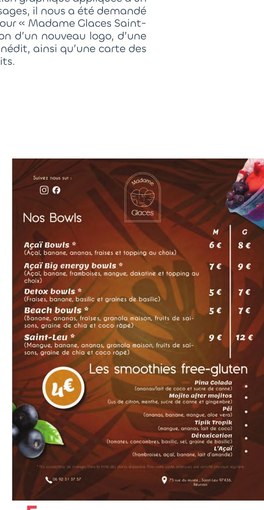
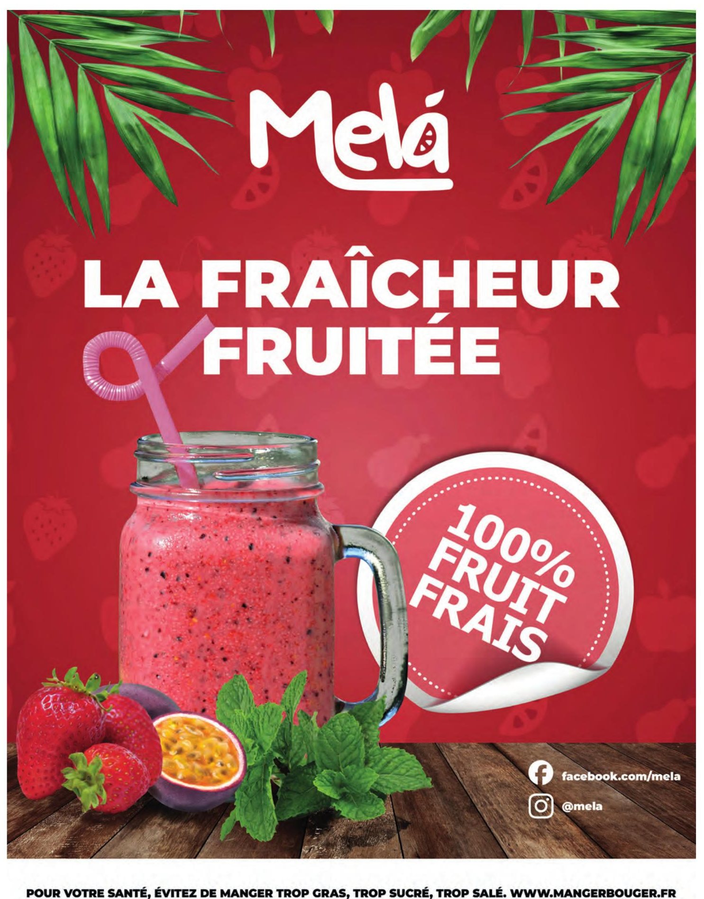
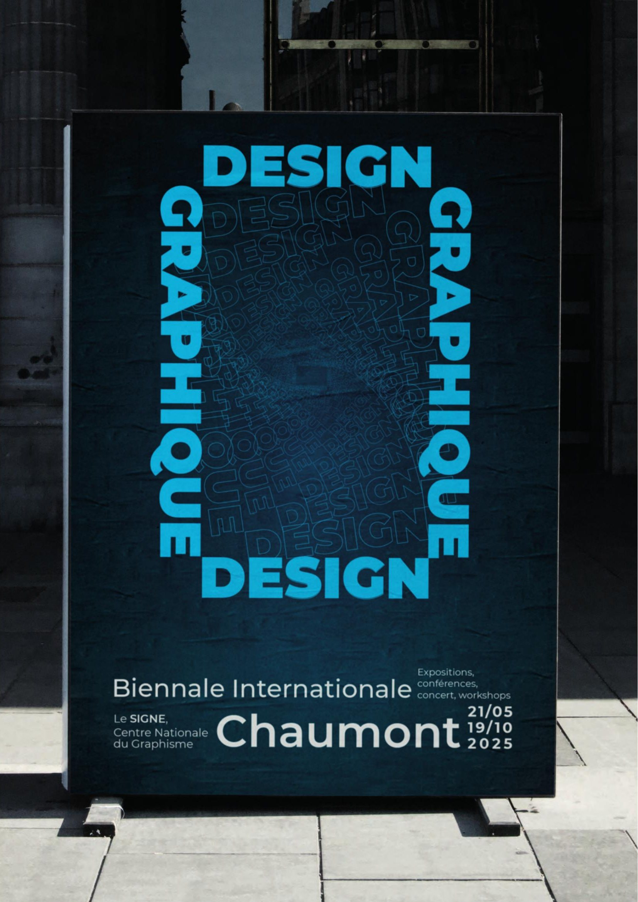
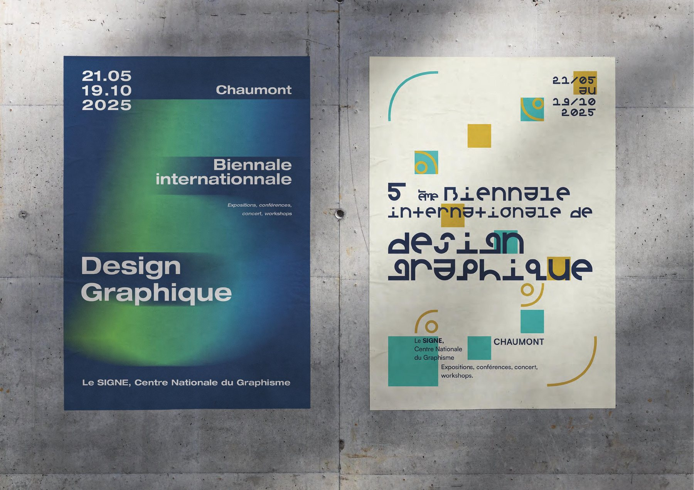
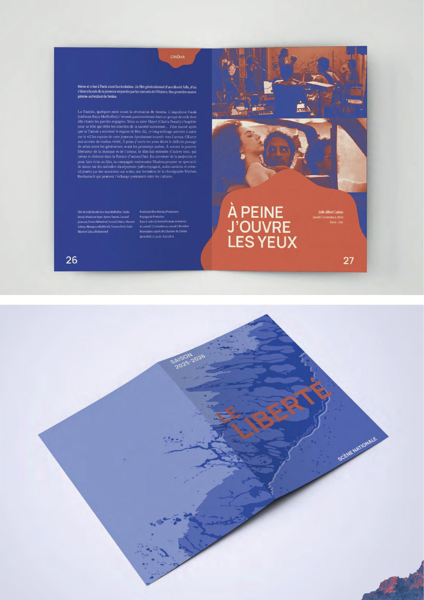
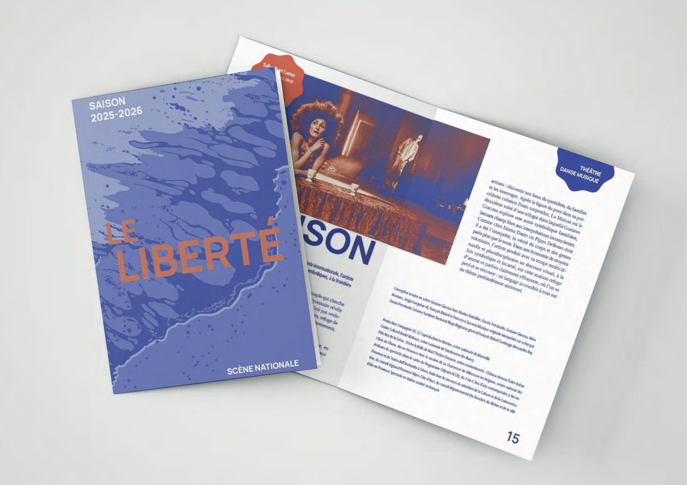
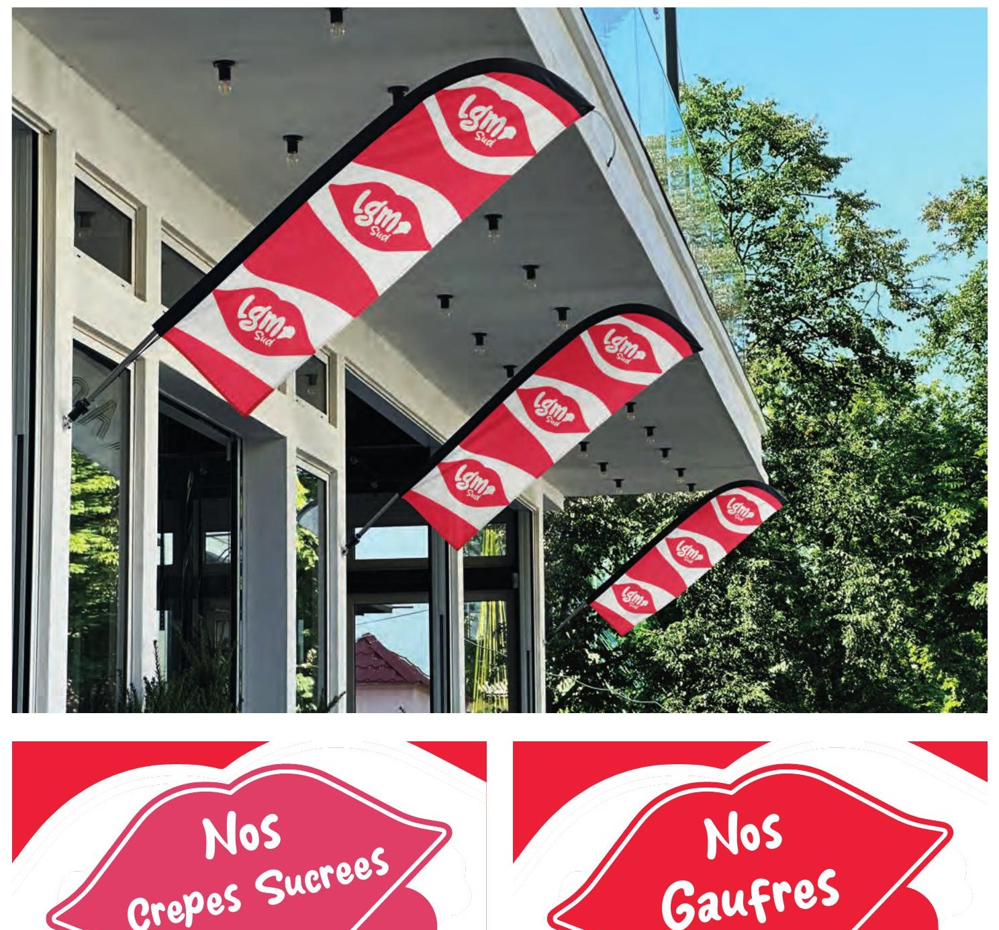
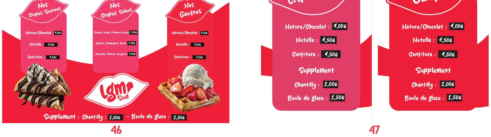

Portfolio complet
Travaux & expérimentations
Infographie, web, design graphique, motion design, projets de marque et travaux personnels — l'ensemble des projets réalisés durant ma formation en design graphique.

Infographie · 2025
Madame Glaces
Voir en grand ↗
Infographie · 2025
Madame Glaces — Carte
Voir en grand ↗
Infographie · 2025
Melà — Smoothies
Voir en grand ↗

Design graphique · 2025
Biennale Internationale
Voir en grand ↗
Design graphique · 2025
Biennale — Variations
Voir en grand ↗
Design graphique · 2025
Flower Power
Voir en grand ↗
Édition · 2025
Le Liberté
Voir en grand ↗
Édition · 2025
Le Liberté — Brochure
Voir en grand ↗
Motion design · 2025
RUNLOC
Voir en grand ↗


Travail personnel · 2025
LGM — Oriflammes
Voir en grand ↗
Travail personnel · 2025